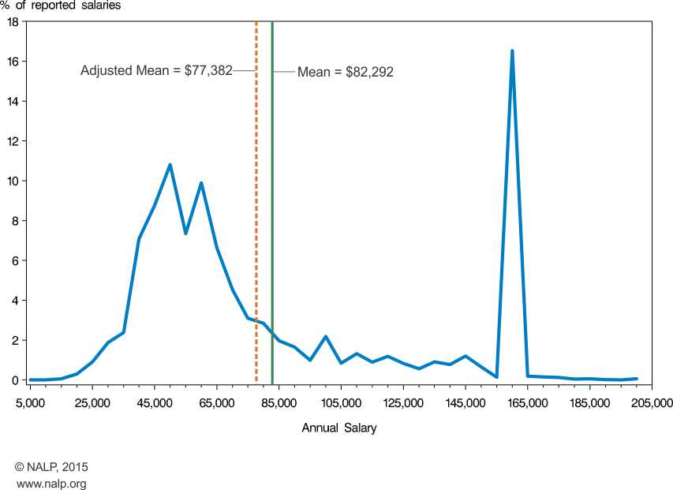
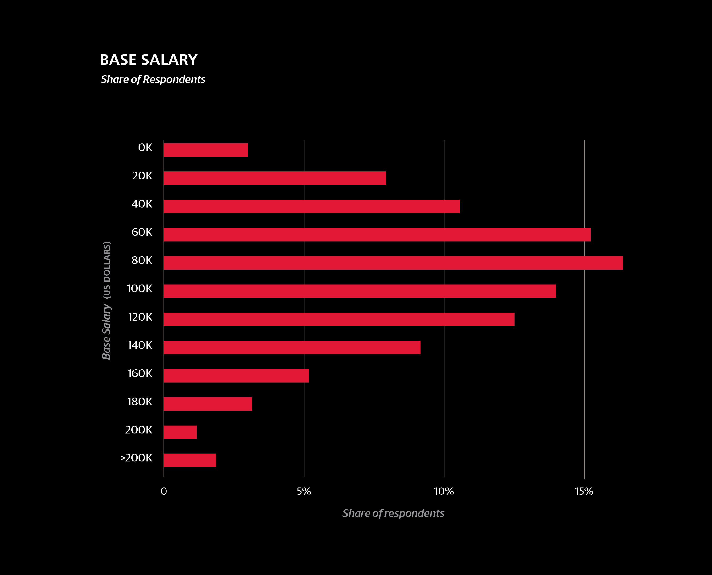

Data Science
Feb 2018
I realized last night that I have yet to really articulate why I am making this switch from teaching to data science. There's more to it than just not being fully satisfied with teaching and needing a job to earn a buck. This post is more for me than it is you, but I thought I'd share.
Those of you who know me well know that I spent last fall studying for the LSAT. I was fairly convinced for about a year and a half that I wanted to become a lawyer. I was taken with the idea of using my mind to answer tough questions and to convince others of my argument's merit, all while fighting for the most vulnerable. I have since abandoned that course, mostly. The salary distribution of lawyers is very bimodal: i.e. there are plenty of lawyers who make a gabazillion dollars, plenty of lawyers who make less than I did as a teacher, and not very many in between. Here is some data gathered by the National Association for Lawyer Placement on the starting salaries of the class of 2014:
I interpret this data to mean that there are generally two types of lawyers, do gooders and corporate. Yes, those are not mutually exclusive, and yes there are lawyers in between. There is a good chance I could have started somewhere near $50k a year and moved up from there, but I'm not sure that little boost is worth the hassle of law school (I was probably going to have to commute to the University of Florida from Jacksonville, about a 90 minute drive, all while my wife was commuting to Daytona, another 90 minute drive, with both of us somehow being parents during that time—sounds like a nightmare). Also, the preponderance of evidence suggests that lawyers are largely unhappy with their work (a quick Google search returns this, and this). I came across a book called The Destruction of Young Lawyers at my local, used book store. It lays out a pretty compelling argument that the field of law is broken and that it's taking young lawyers with it. All of this combined was enough for me to start thinking about other options.
While I taught high school, I always kept a rather elaborate grade book in Excel. AP exams are scored from a 1 to a 5, and I used my grade book to analyze my students' test scores and come up with an equivalent, AP score. Some of the most fun I had teaching was staying up late, playing with Excel, trying to pry as much information I could out of my data. During my last year teaching physics, I wrote a Google Sheets add-on that generated an individualized report for each student outlining his or her areas of weakness and strength, both in terms of content and in terms of question difficulty. Looking back, I guess I could have taken the hint that I was in the wrong field. I will miss parts of teaching: those few students who really wanted to learn, seeing kids grow and push through the hard content, among others. But in the end, teaching isn't about solving and wrangling content, it's about solving and wrangling teenagers, and I that's not how I want to spend my energy.
So here we are: data science (doesn't the salary distribution looks a lot friendlier?). I took a year of Java in undergraduate, and I've always had a penchant for computers and their inner workings, complete with hosting LAN parties all through high school and college (if you don't know what a LAN party is, don't Google it; just assume it's very cool and hip). This past November, when I really decided to abandon my LSAT studies, I first started looking to become a software developer in general. But I quickly zeroed in on data science. Here are the five main reasons why I'm fairly confident that data science is where I belong:
I originally wrote that Google Sheets add-on to save time. I didn't want to copy and paste my students' data 170 times in 4 different places. It took me about a week to get the script working correctly (this includes the time needed to brush up on my JavaScript via CodeAcademy). In other words, I spent way more time writing the script than if I had just put on a movie and trudged through the copy and paste in the first place. But with the script I was so focused and so excited. I had plans to generalize the add-on and distribute it to my fellow teachers. I thought about my script as I was falling asleep, driving to work, and pretty much every other time in between, much to my wife's dismay.
I love tinkering with it all. If I think something is possible, I can't stop until I've got it working. That sounds like an asset when it comes to data science.
I learned the value of thinking clearly about method and theory in graduate school. I have a MA in the History and Philosophy of Science, and I finished all my coursework for a Ph.D. in the History of Religion. The historical goal of religious studies has been to tie all the world's religions together, searching for underlying themes, asking about what lies beneath them all, and trying to get at religion's core. I belonged to a more critical camp, asking instead about how the category of "religion" itself gets deployed in various settings to gain and restrict access to social, political, and economic capital (the summary of each of these camps is rather crude, but they will do for now). Using similar methods in the history and philosophy of science, I took fresh looks at the is/ought distinction, at the dispute between Schrödinger, Heisenberg and their interpretations of quantum mechanics, and at the role of social construction in our scientific concepts.
I want to do the same thing but with data. What questions could we be asking that we haven't thought of yet? How could we reframe old questions to get at new answers? What discoveries await us in the ridiculous plethora that is our modern data?
I have always loved the careful communication of a concept and the meeting of minds that occurs when that communication is successful. An underlying current in all my career meandering has been the sharing of ideas: from astrophysicist, to philosopher, to historian, to teacher, at their core they are all roles concerned with the dissemination of knowledge. Distilling difficult concepts and helping students understand them was the most rewarding part of teaching physics. This is a crucial aspect of data science. A data scientist must communicate data clearly through visualizations and explain predictive models to clients or another departments. I think this pedagogical role of the data scientist will fit me very well.
The primary impetus behind my brief flirtation with law was the chance to use my mind to help the world. I abandoned my Ph.D. primarily because I saw the academy, and the humanities in particular, as a bit of a blackhole—I did not want to spend my life writing books that maybe one hundred other people on earth might read. I did not want to hyper-specialize to play the publish or perish game. It all felt a bit useless (not an education in the humanities in general, mind you, just the post-graduate side of it). Law felt like a place I could research, read, and write for the greater good—but, for the reasons above, also not a great fit.
I feel that with data science, I could finally contribute in a way that fits who I am. I'm not one to get out there and volunteer at this or that event on a regular basis (I participate in the occasional creek clean up and the like). But I'm very drawn to the idea of sitting down at my computer and figuring out answers that could help guide the city or a non-profit. What resources are needed where and when? Who is falling through the cracks and how can they be better served? The potential for using data science for the greater good is immense, and I can't wait to participate.
All of my childhood I wanted to be an astronomer. The universe captivated me since I was in grade school, and it continues to hold me in its grasp. I began college as an English major, having fallen in love with literature during my AP courses in high school, but after freshman year I switched to astronomy. I spent my summers trying to catch up on coursework, and did not participate in any undergraduate research until late senior year. This put me a little behind the curve, and I didn't get into a Ph.D. program. None of that has changed my love of science. It's the best way of knowing. I may not be discovering the true nature of dark matter, but I'll making discoveries nonetheless, and who knows, perhaps some of them will be a little more down to earth.
-Chad